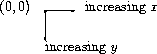

The viewport graphics library is a relatively simple toolbox of graphics commands. The library is not very powerful; it is intended as a simplified alternative to MrEd's full graphical toolbox.
The graphics library originated as SIXlib, a library of X Windows commands available within Chez Scheme at Rice University. The functionality of that library has been reproduced (with backward compatibility) in this version.
To use the viewport graphics library in a PLT language, load it via
require:
(require (lib "graphics.ss" "graphics"))
which loads the graphics.ss library from the graphics collection. All of the names defined in this chapter will then be available.
(open-graphics)
Initializes the library's graphics routines. It must be
called before any other graphics operations.
(close-graphics)
Closes all of the windows and until
open-graphics is called again, no graphics routines will work.
(open-viewport name horiz vert)
Takes a string name and integers horiz and vert and
creates a new window called name. The window is
horiz pixels wide and vert pixels high.
For backward compatibility, a single posn value (see below) can be
submitted in the place of horiz and vert. open-viewport
returns a viewport descriptor.
(open-pixmap name horiz vert)
Like open-viewport, but the resulting viewport is not displayed
on the screen. Offscreen pixmaps are useful for executing a sequence
of drawing commands and displaying them all at once with
copy-viewport.
Offscreen pixmaps are also useful in conjunction with viewport->snip (see below). This allows functions to compute with graphical objects and view the graphics when results are returned to the interactions window.
(close-viewport viewport)
Takes a viewport descriptor. It removes the viewport
from the screen and makes subsequent operations dealing with the
viewport illegal.
A position is a pixel location within a viewport. The upper-left corner is pixel (0, 0) and the orientation of the position coordinates within a viewport is as follows:
|  |
(make-posn x y)
Takes two integers and returns a position
with the specified x and y coordinates.
(posn-x , p)(posn-y p)
Return the x and y coordinates, respectively, of a position.
(posn? v)
Reports whether v is a position.
((get-pixel viewport) p)
Returns the color of the pixel at position p in viewport;
0 denotes white and 1 denotes not white.
((get-color-pixel viewport) p)
Returns an RGB value for color of the pixel at position p in
viewport.
((test-pixel viewport) color)
Returns the color that will actually be used if color is used
to draw.
A color can be represented in three ways: as a color index (an integer
in 0 to 299, inclusive), as a color name string, or as a rgb
value. All drawing functions which take a color argument accept
colors in any form. An rgb value is assigned to an index with
change-color.
(make-rgb red green blue)
Takes three values in the range 0 (dark) to 1 (bright) and returns an
rgb (a color).
(rgb-red color)
(rgb-blue color)
(rgb-green color)
Return the red, green, and blue components, respectively, of a color.
(rgb? v)
Reports whether v is a color.
(change-color index rgb)
Changes the color at index in the color table to the
color specified in rgb. Only the first twenty-one indices
are initialized; a color index should not be used until it has
been initialized.
(default-display-is-color?)
Returns #t if the default display
screen for viewports is in color or #f otherwise.
These are the basic graphics operations for drawing to a viewport.
Each function takes a viewport as its argument and returns a function
operating within that viewport.
Further arguments, if any, are curried.
For example, (draw-line viewport) returns a
function, that can then be applied to the proper arguments to draw a
line in the viewport corresponding to viewport descriptor viewport.
An example follows.
Where ``draw-'' commands make pixels black, ``clear-'' commands make them white.
Where ``draw-'' commands make pixels black, a ``flip-'' commands cause them to change.
((draw-viewport viewport) color)
Takes a viewport descriptor. It returns a
function that colors the entire contents of viewport.
The optional color argument defaults to black.
((clear-viewport viewport))
Takes a viewport descriptor. It returns a
function that whitens the entire contents of viewport.
((flip-viewport viewport))
Takes a viewport descriptor.
It returns a function that flips the contents of viewport.
(copy-viewport source-viewport destination-viewport)
Takes two viewport descriptors.
It copies the source-viewport into the destination-viewport.
((draw-pixel viewport) p color)
Takes a viewport descriptor. It returns a function that
draws a pixel in viewport at the specified position.
The optional color argument defaults to black.
((clear-pixel viewport) p)
Takes a viewport descriptor. It returns a function that
clears a pixel in viewport at the specified position.
((flip-pixel viewport) p)
Takes a viewport descriptor. It returns a function that
flips a pixel in viewport at the specified position.
((draw-line viewport) p1 p2 color)
Takes a viewport descriptor. It returns a function that
draws a line in the viewport connecting positions p1 and p2.
The optional color argument defaults to black.
((clear-line viewport) p1 p2)
Takes a viewport descriptor. It returns a function that
clears a line in viewport connecting positions p1 and p2.
((flip-line viewport) p1 p2)
Takes a viewport descriptor. It returns a function that
flips a line in viewport connecting positions p1 and p2.
((draw-rectangle viewport) posn width height color)
Takes a viewport descriptor. It returns a function
that draws a rectangle border in the viewport with the top-left of
the rectangle at the position posn and with sides width across
and height tall.
The optional color argument defaults to black.
((clear-rectangle viewport) posn width height)
Takes a viewport descriptor. It returns a function that
clears a rectangle border in the viewport with the top-left of the rectangle
at the position posn and with sides width across and height tall.
The optional color argument defaults to black.
((flip-rectangle viewport) posn width height color)
Takes a viewport descriptor. It returns a function that
flips a rectangle border in the viewport with the top-left of the rectangle
at the position posn and with sides width across and height tall.
The optional color argument defaults to black.
((draw-solid-rectangle viewport) posn width height
color)
Takes a viewport descriptor. It returns a function that
paints a solid rectangle in the viewport with the top-left of the rectangle
at the position posn and with sides width across and height tall.
The optional color argument defaults to black.
((clear-solid-rectangle viewport) posn width height)
Takes a viewport descriptor. It returns a function that
erases a solid rectangle in the viewport with the top-left of the rectangle
at the position posn and with sides width across and height tall.
The optional color argument defaults to black.
((flip-solid-rectangle viewport) posn width height
color)
Takes a viewport descriptor. It returns a function that
flips a solid rectangle in the viewport with the top-left of the rectangle
at the position posn and with sides width across and height tall.
The optional color argument defaults to black.
((draw-ellipse viewport) posn width height
color)
Takes a viewport descriptor. It returns a function that
draws an ellipse border in the viewport. The posn, width,
and height arguments are as in draw-rectangle; the ellipse
is inscribed within the specified rectangle.
The optional color argument defaults to black.
((clear-ellipse viewport) posn width height)
Takes a viewport descriptor. It returns a function that
clears an ellipse border in the viewport. The posn, width,
and height arguments are as in clear-rectangle; the ellipse
is inscribed within the specified rectangle.
The optional color argument defaults to black.
((flip-ellipse viewport) posn width height
color)
Takes a viewport descriptor. It returns a function that
flips an ellipse border in the viewport. The posn, width,
and height arguments are as in flip-rectangle; the ellipse
is inscribed within the specified rectangle.
The optional color argument defaults to black.
((draw-solid-ellipse viewport) posn width height
color)
Takes a viewport descriptor. It returns a function that
paints a solid ellipse in the viewport. The posn, width,
and height arguments are as in draw-rectangle; the ellipse
is inscribed within the specified rectangle.
The optional color argument defaults to black.
((clear-solid-ellipse viewport) posn width height)
Takes a viewport descriptor. It returns a function that
erases a solid ellipse in the viewport. The posn, width,
and height arguments are as in clear-rectangle; the ellispse
is be inscribed within the specified rectangle.
The optional color argument defaults to black.
((flip-solid-ellipse viewport) posn width height
color)
Takes a viewport descriptor. It returns a function that
flips a solid ellipse in the viewport. The posn, width,
and height arguments are as in flip-rectangle; the ellipse
is be inscribed within the specified rectangle.
The optional color argument defaults to black.
((draw-polygon viewport) posn-list posn color)
Takes a viewport descriptor. It returns a function that
draws a polygon border in the viewport using posn-list for the
polygon vertices and posn as an offset for the polygon.
The optional color argument defaults to black.
((clear-polygon viewport) posn-list posn)
Takes a viewport descriptor. It returns a function that
erases a polygon border in the viewport using posn-list for the
polygon vertices and posn as an offset for the polygon.
((flip-polygon viewport) posn-list posn)
Takes a viewport descriptor. It returns a function that
flips a polygon border in the viewport using posn-list for the
polygon vertices and posn as an offset for the polygon.
((draw-solid-polygon viewport) posn-list posn color)
Takes a viewport descriptor. It returns a function that
paints a solid polygon in the viewport using posn-list for the
polygon vertices and posn as an offset for the polygon.
The optional color argument defaults to black.
((clear-solid-polygon viewport) posn-list posn)
Takes a viewport descriptor. It returns a function that
erases a solid polygon in the viewport using posn-list for the
polygon vertices and posn as an offset for the polygon.
((flip-solid-polygon viewport) posn-list posn)
Takes a viewport descriptor. It returns a function that
flips a solid polygon in the viewport using posn-list for the
polygon vertices and posn as an offset for the polygon.
((draw-string viewport) p string color)
Takes a viewport descriptor. It returns a function that
draws a string at a specified location in the viewport. The lower
left of the string begins at p.
The optional color argument defaults to black.
((clear-string viewport) p string)
Takes a viewport descriptor. It returns a
function that clears a string at a specified location in
viewport. The lower left of the string begins at p.
((flip-string viewport) p string)
Takes a viewport descriptor. It returns a function that
flips a string at a specified location in viewport. The lower
left of the string begins at p.
(((draw-pixmap-posn filename type) viewport) posn color)
Draws a pixmap into viewport with its
upper left corner at position posn. The
type is an optional symbol, one of 'gif, 'gif/mask, 'xbm, 'xpm,
'bmp, 'pict, 'unknown, or 'unknown/mask, and defaults to
'unknown/mask. If type is 'unknown or 'unknown/mask, then the content of the
file is examined to determine the type.
All formats are supported on all platforms,
except 'pict which is only supported under Mac OS.
The 'gif/mask and 'unknown/mask types draw the bitmap with a
transparent background if filename refers to a GIF file with a transparent background.
The argument color is only used when the pixmap is black and
white. In that case, the color is used instead of black in the drawn
image.
((draw-pixmap viewport) filename p color)
Draws a pixmap into viewport w with its
upper left corner at position p.
If color is not #f it is passed to
set-viewport-pen with the viewport. It defaults to #f.
((save-pixmap viewport) filename type)
Saves the current content of viewport to filename.
The
type is an optional symbol, one of 'xbm, 'xpm,
'bmp (Windows only), or 'pict (Mac OS only); the default
is 'xpm.
((get-string-size viewport) string)
Takes a viewport descriptor. It returns a
function that returns the size of a string as a list of two numbers:
the width and height.
(viewport->snip viewport)
Takes a viewport descriptor. It returns an
object that can be inserted into an editor buffer to display the
current image in the viewport. (Subsequent drawing to the viewport
does not affect the snip's image.)
When snips are the results of computations in the interactions window, DrScheme will print show the contents of the viewport, right in the interactions window.
(viewport-dc viewport)
Takes a viewport descriptor. It returns an
object that can be used with the primitive MrEd toolbox
functions to draw into the viewport's on-screen representation
(if any). Mirror all such drawing to the result of
(viewport-offscreen-dc , too.viewport)
(viewport-offscreen-dc viewport)
Takes a viewport descriptor. It returns an
object that can be used with the primitive MrEd toolbox
functions to draw into the viewport's off-screen representation.
Mirror all such drawing to the result of
(viewport-dc , too.
viewport)
(open-graphics) ;; nothing appears to happen, but the library is initialized... (define w (open-viewport"practice" 300 300)) ;; viewport appears ((draw-linew) (make-posn30 30) (make-posn100 100)) ;; line appears (close-viewportw) ;; viewport disappears (close-graphics) ;; again, nothing appears to happen, but ;; unclosed viewports (if any) would disappear
The use of multiple viewports, viewport descriptors, drawing operations for multiple viewports is as easy as the use of a single viewport:
(open-graphics) (let* (;;w1andw2are viewport descriptors for different windows [w1 (open-viewport"viewport 1" 300 300)] [w2 (open-viewport"viewport 2" 200 500)] ;; d1 and d2 are functions that draw lines in different viewports [d1 (draw-linew1)] [d2 (draw-linew2)]) ;; draws a line in viewport labeled "viewport 1" (d1 (make-posn100 5) (make-posn5 100)) ;; draws a line in viewport labeled "viewport 2" (d2 (make-posn100 100) (make-posn101 400))) ;; we no longer have access to viewports 1 and 2, ;; since their descriptors did not escape thelet(close-graphics) ;; removes the viewports
To guarantee the proper closing of viewports in cases of errors,
especially when a program manages several viewports simultaneously, a
programmer should use dynamic-wind:
(let ([w (open-viewport"hello" 100 100)]) (dynamic-wind;; what we want to happen first: nothingvoid;; the main program (errors constrained to this piece) (lambda () (draw-pixel13)) ; an error ;; what we would like to happen, whether the main program finishes ;; normally or not (lambda () (close-viewportw))))
The graphics library contains functions that determine where the
mouse is, if there are any clicks, etc.
The functions get-mouse-click and ready-mouse-click first
return a ``mouse-click descriptor,'' and then other functions take
the descriptor and return the mouse's position, which button was
pushed, etc.
Mouse clicks are buffered and returned in the same order in which
they occurred.
Thus, the descriptors returned by get-mouse-click and
ready-mouse-click may be from clicks that occurred long
before these functions were called.
(get-mouse-click viewport)
Takes a viewport descriptor and returns
a mouse click descriptor.
It returns the next mouse click in the viewport, waiting for a click
if necessary.
(ready-mouse-click viewport)
Takes a viewport descriptor and returns
either a mouse click descriptor, or else #f if none is available.
Unlike the previous function, ready-mouse-click returns immediately.
(ready-mouse-release viewport)
Takes a viewport descriptor and returns
either a click descriptor from a mouse-release (button-up) event,
or else #f if none is available.
(query-mouse-posn viewport)
Takes a viewport descriptor and returns
either the position of the mouse cursor within the viewport,
or else #f if the cursor is currently outside the viewport.
(mouse-click-posn mouse-click)
Takes a mouse click descriptor and
returns the position of the pixel where the click occurred.
(left-mouse-click? mouse-click)
Takes a mouse click descriptor and returns
#t if the click occurred with the left mouse button,
or else #f.
(middle-mouse-click? mouse-click)
Similar to left-mouse-click?.
(right-mouse-click? mouse-click)
Similar to left-mouse-click?.
(viewport-flush-input viewport)
As noted above, mouse clicks are buffered.
viewport-flush-input takes a viewport descriptor
and empties the input buffer of mouse and keyboard events.
This action is useful in some real-time applications.
The graphics library contains functions that report key presses from
the keyboard. The functions get-key-press and
ready-key-press return a ``key-press descriptor,'' and then
key-value takes the descriptor and returns a character or
symbol (usually a character) representing the key that was pressed.
Key presses are buffered and returned in the same order in which they
occurred. Thus, the descriptors returned by get-key-press and
ready-key-press may be from presses that occurred long before
these functions were called.
(get-key-press viewport)
Takes a viewport descriptor and returns
a key press descriptor.
It returns the next key press in the viewport, waiting for a click
if necessary.
(ready-key-press viewport)
Takes a viewport descriptor and returns
either a key press descriptor, or else #f if none is available.
Unlike the previous function, ready-key-press returns immediately.
(key-value key-press)
Takes a key press descriptor and returns a character or special
symbol for the key that was pressed. For example, the Enter key
generates #\return, and the up-arrow key generates 'up.
For a complete list of possible return values, see PLT MrEd: Graphical Toolbox Manual.
(viewport-flush-input viewport)
As noted above, key presses are buffered.
viewport-flush-input takes a viewport descriptor
and empties the input buffer of mouse and keyboard events.
This action is useful in some real-time applications.
To use a unitized version of the graphics library (see PLT MzLib: Libraries Manual
for more information on units), get the signatures
graphics^, graphics:posn-less^, and
graphics:posn^ with:
(require (lib "graphics-sig.ss" "graphics"))
The graphics^ signature includes all of the names defined in
this chapter. The graphics:posn-less^ signature contains
everything except the posn structure information, and
graphics:posn^ contains only the posn structure.
To obtain graphics@, which imports mred^ (all of
the MrEd classes, functions, and constants) and exports
graphics^:
(require (lib "graphics-unit.ss" "graphics"))
The graphics-posn-less-unit.ss library provides
graphics-posn-less@, which imports graphics:posn^ in
addition to MrEd.